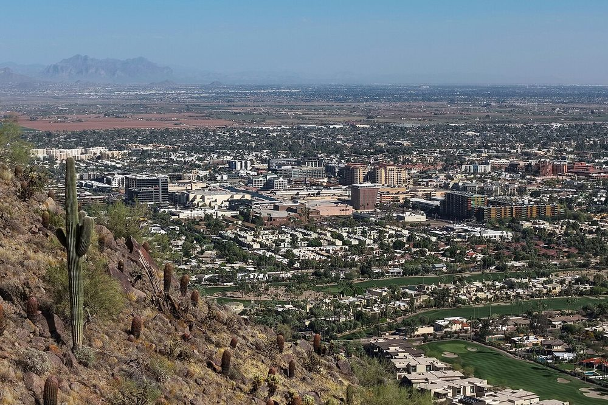

Bathroom Tile Installation in Scottsdale, AZ
Scottsdale bathrooms span a wide range of home styles and sizes, from compact layouts in mid-century ranch homes near Old Town to larger primary suites in custom builds in Gainey Ranch and DC Ranch. The tile work is different in each, and the prep underneath matters more than the tile on top.

Bathroom floors that sit flat
Large format porcelain or stone tile on bathroom floors needs a flat substrate first, with movement joints planned and the layout settled before setting. In Arizona heat, with wide temperature swings between seasons, the setting material and the substrate preparation matter as much as the tile itself. Epoxy grout is available for homeowners who want the most stain-resistant and moisture-resistant grout, especially where water contact with the floor tile is constant.
Primary bathrooms, walls and vanities
A primary bathroom in Scottsdale often asks for large format tile on the walls, a freestanding tub, and separate vanities, with a curbless shower and frameless glass. We plan the wall tile, the niche and bench, and the transitions to the floor as one layout, so the grout lines stay straight and the room reads calm. Marble and natural stone need sealing suited to wet use, and we talk through that care before you commit.
Guest baths and powder rooms
Guest baths and powder rooms are smaller, and the tile can carry more personality there without overwhelming the room. A patterned floor, a mosaic accent, or a bold wall tile works in a small room when the layout is planned around the vanity, the mirror, and the door swing. We keep the details in proportion to the room, so the finished bath feels intentional, not busy.
What we review before bathroom tile installation in Scottsdale
- The room, the material, and what you want changed
- The existing surface, and the waterproofing and prep it needs
- Layout, grout lines, and the details around fixtures and edges
- Scheduling, access, and how the work fits around your home
Questions about bathroom tile installation in Scottsdale
Is epoxy grout worth it in a bathroom?
It can be, especially in a shower or on a floor that sees a lot of water. Epoxy grout is more stain-resistant and moisture-resistant than standard grout, and it costs more to install. We will talk through whether it fits your bathroom.
Can tile run from the bathroom floor into the shower?
Yes, in many bathrooms, and it makes the room feel larger. It needs the right tile for wet use, a correctly sloped shower floor, and a drain planned for the whole area.
Large format tile on a bathroom floor, is the slab flat enough?
That depends on your floor, and we check it before ordering tile. Large format tile shows every dip, so flatness is checked first, and leveling is planned before setting anything.
More: Tile installation in Scottsdale and Bathroom Tile Installation. See all service areas.
Call (602) 884-1904 to talk through your project and set up a free estimate.